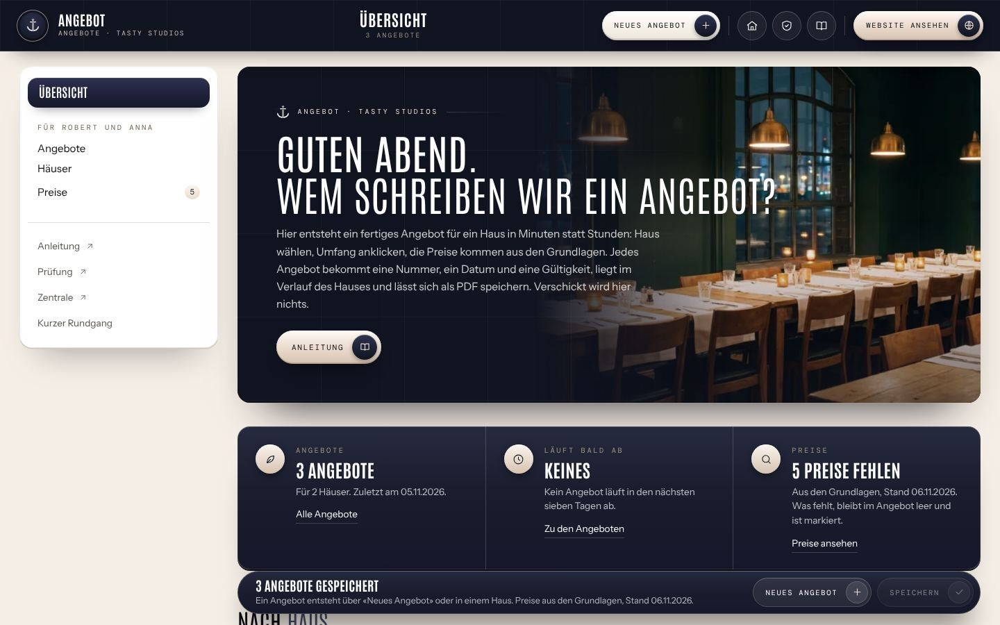
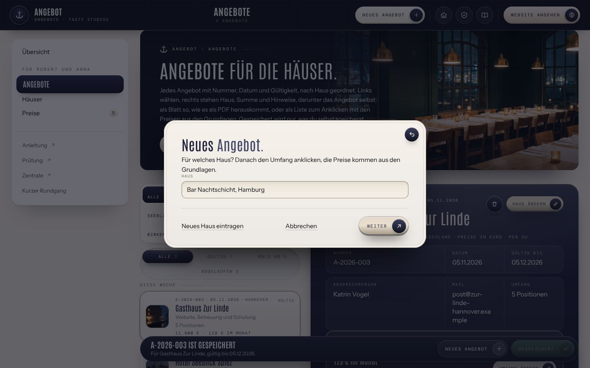
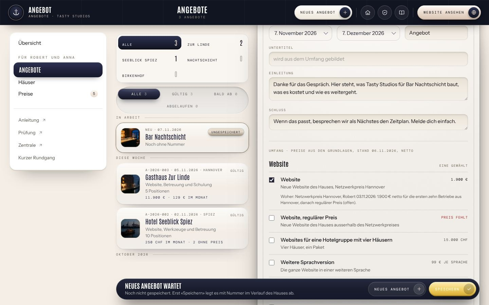
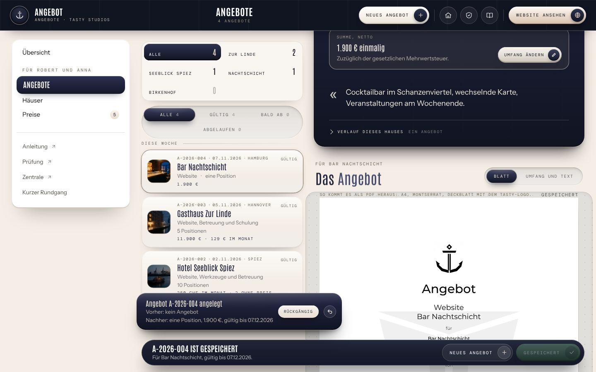
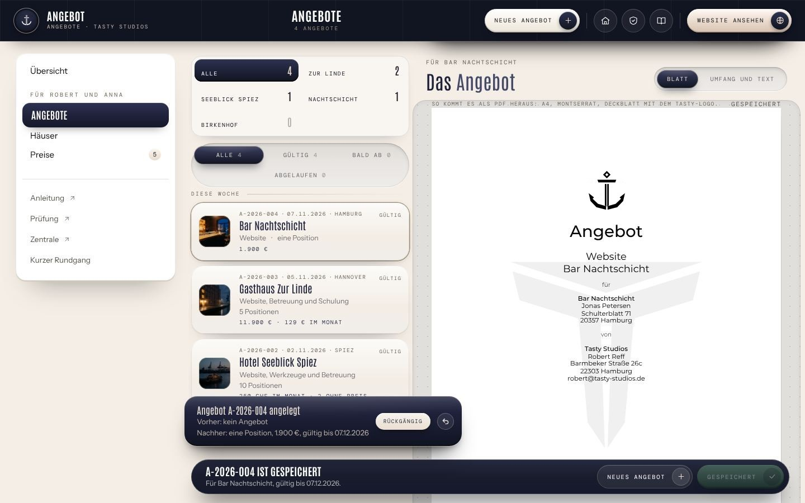
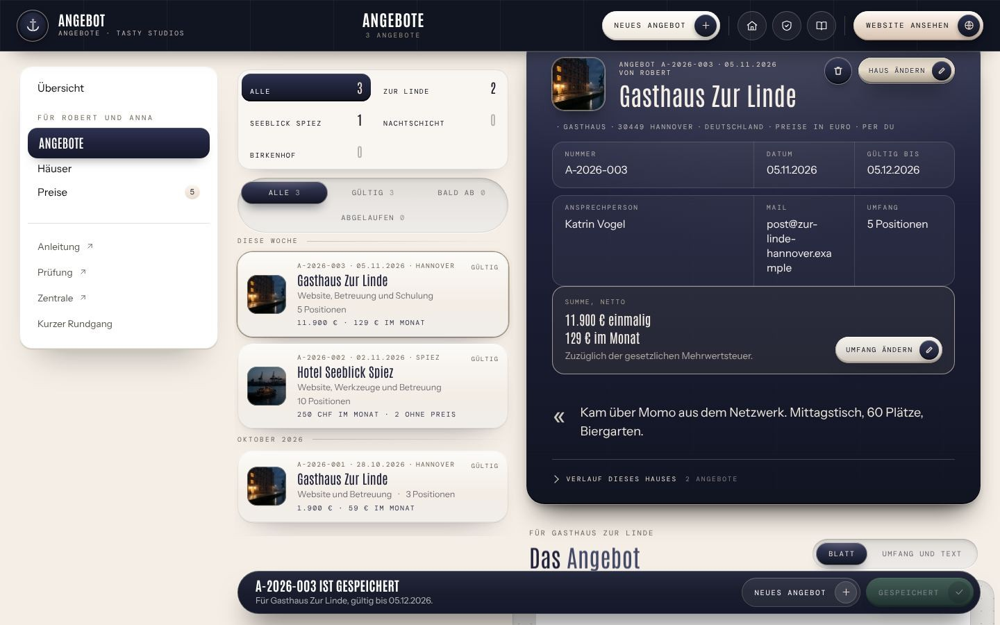
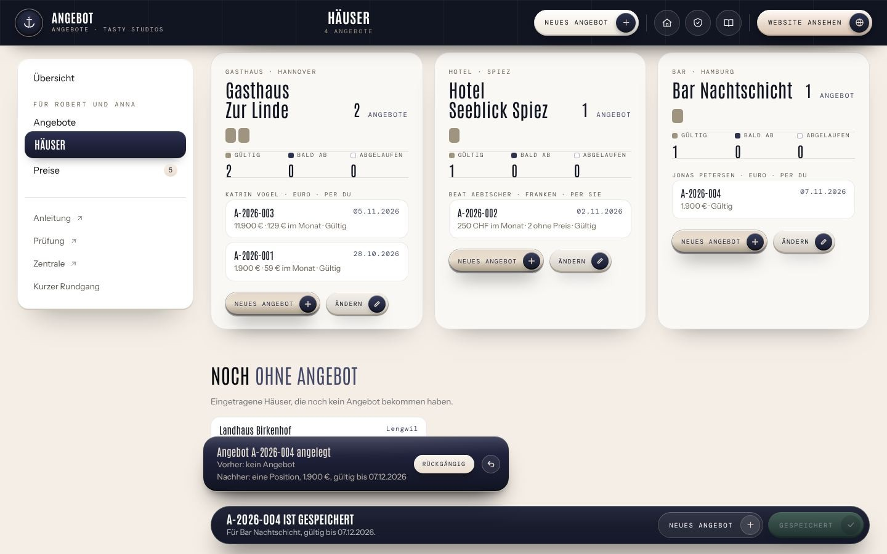
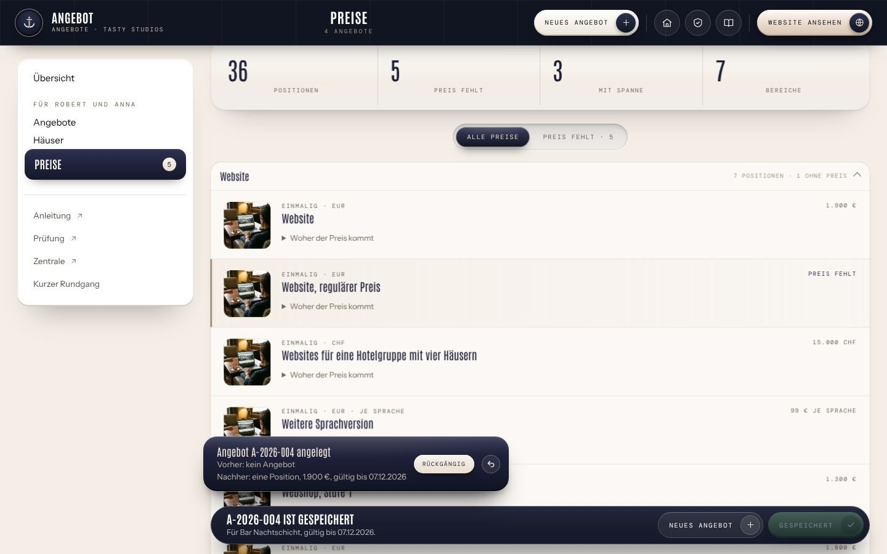

So ist das Werkzeug aufgebaut.
Mit «Angebot» entsteht ein fertiges Angebot für ein Haus in Minuten statt Stunden. Die Preise kommen aus den Grundlagen (Angebot.md), einmal in die Preisdatei übernommen, mit Stand-Datum. Nichts wird erfunden, nichts verschickt.
- Oben in der Übersicht drei Felder: wie viele Angebote es gibt, welche in den nächsten sieben Tagen ablaufen, und wie viele Preise in den Grundlagen fehlen. Darunter die Häuser mit Foto und der Zahl ihrer Angebote, links «Zuletzt geschrieben», rechts «Preis fehlt».
- Links die Bereiche: «Angebote», «Häuser» und «Preise». Die Zahl daneben zeigt, was auf dich wartet. Auf dem Handy öffnet «Bereiche» die Liste.
- Die Leiste unten sagt in einem Satz, wo du stehst. «Speichern» ist grau, solange nichts offen ist, gelb, sobald eine Änderung wartet, grün, wenn das Angebot gespeichert ist.

Ein Angebot anfangen.
Ein neues Angebot beginnt immer bei einem Haus. Ist das Haus noch nicht eingetragen, geht das im selben Fenster.
- Oben «Neues Angebot» drücken (auch in der Leiste unten oder in der Karte eines Hauses).
- Im Fenster das Haus wählen, oder «Neues Haus eintragen»: Name genügt, Ansprechperson, Adresse, Währung (Euro oder Franken) und Anrede (Du oder Sie) kommen auf das Deckblatt.
- «Weiter» öffnet das Angebot unter «Angebote», gleich mit «Umfang und Text». Datum ist heute, gültig ist es 30 Tage (änderbar).

Den Umfang anklicken.
Unter «Das Angebot» schaltet «Umfang und Text» vom Blatt auf die Liste zum Anklicken. Jede Position steht mit ihrem Preis aus den Grundlagen da, netto.
- Oben Datum, Gültig bis, Titel, Untertitel (bleibt er leer, entsteht er aus dem Umfang), Einleitung und Schluss.
- Darunter die Bereiche: Website, Werkzeuge, Betreuung, Drucksachen, Feed, Schulung, Backoffice. Ein Klick auf das Feld vorne nimmt eine Position ins Angebot.
- Wo eine Menge Sinn ergibt (Sprachen, Häuser, Teilnehmer), erscheint ein Feld «Menge». Hat eine Position nur eine Spanne oder keinen Preis, erscheint «Betrag für dieses Angebot». Fehlt der Preis in den Grundlagen, steht «Preis fehlt» in Rot; einen Betrag nur nach Roberts Wort eintragen.
- Unter jeder gewählten Position steht «Woher», also die Stelle in den Grundlagen, aus der der Preis kommt.

Speichern mit Quittung.
Gespeichert wird nur, was du selbst speicherst. Nichts geht still verloren und nichts wird still gespeichert.
- Sobald etwas geändert ist, wird «Speichern» in der Leiste gelb. Drücken legt das Angebot ab; ein neues bekommt dabei seine Nummer (A-Jahr-laufende Nummer).
- Danach erscheint eine Quittung mit «Vorher» und «Nachher» (Zahl der Positionen, Summe, Gültigkeit) und «Rückgängig». Rückgängig stellt den alten Stand wieder her.
- Wechselst du mit einer offenen Änderung zu einem anderen Angebot, fragt ein Fenster: speichern, verwerfen oder zurück.
- Löschen über den runden Knopf mit dem Papierkorb in der Karte, mit Rückfrage. Auch dort holt «Rückgängig» das Angebot zurück.

Das Blatt und das PDF.
«Blatt» zeigt das Angebot so, wie es als PDF herauskommt: A4, Montserrat Light, Regular und Medium, nie fett, Schwarz, 11 pt, Deckblatt mit dem Tasty-Logo. Der Seitenumbruch rechnet sich selbst, eine Überschrift bleibt bei ihrem Text.
- «Als PDF speichern» unter dem Blatt drücken. Es öffnet sich das Druckfenster des Browsers.
- Dort «Als PDF sichern» wählen, Ränder auf «Keine», Kopf- und Fusszeilen aus. Das Blatt bringt die 2,54 cm Rand selbst mit.
- Verschickt wird hier nichts, und es öffnet sich kein Mailprogramm. Das PDF gibst du selbst weiter.

Angebote finden.
Unter «Angebote» stehen alle Angebote nach Monat, das neueste oben.
- Oben die Häuser mit der Zahl ihrer gültigen Angebote: ein Klick zeigt nur dieses Haus.
- Darunter die Auswahl «Alle», «Gültig», «Bald» (läuft in sieben Tagen ab) und «Abgelaufen».
- In der Karte rechts klappt «Verlauf dieses Hauses» alle Angebote des Hauses auf. Die Zentrale meldet unter «Heute», wenn ein Angebot bald abläuft, und öffnet es direkt.

Die Häuser.
Jedes Haus hat eine Karte: Art, Ort, Ansprechperson, Währung, Anrede und alle Angebote mit ihrem Stand.
- «Neues Haus» oben trägt ein Haus ein, «Ändern» in der Karte ändert es. Beides mit Quittung und «Rückgängig».
- «Neues Angebot» in der Karte beginnt gleich ein Angebot für dieses Haus.
- Ein Haus lässt sich nur löschen, wenn es kein Angebot mehr hat. Häuser ohne Angebot stehen unten unter «Noch ohne Angebot».

Was es kostet.
«Preise» zeigt die ganze Preisdatei, nach Bereichen, mit Stand-Datum. Hier wird nichts geändert: die Preise kommen nur aus den Grundlagen.
- Oben die Zahlen: Positionen, Preis fehlt, mit Spanne, Bereiche. «Preis fehlt» zeigt nur, was in den Grundlagen keinen Betrag hat.
- Jede Position klappt «Woher der Preis kommt» auf, mit dem Satz aus den Grundlagen.
- Legt Robert einen fehlenden Preis fest, wird er in preise.json eingetragen und das Stand-Datum angepasst.

Wenn etwas nicht geht.
Jede Meldung des Werkzeugs nennt ein Stichwort. «Was tun?» in der Meldung führt zur Prüfseite, dort steht zu jedem Stichwort, was man sieht, warum und was hilft.